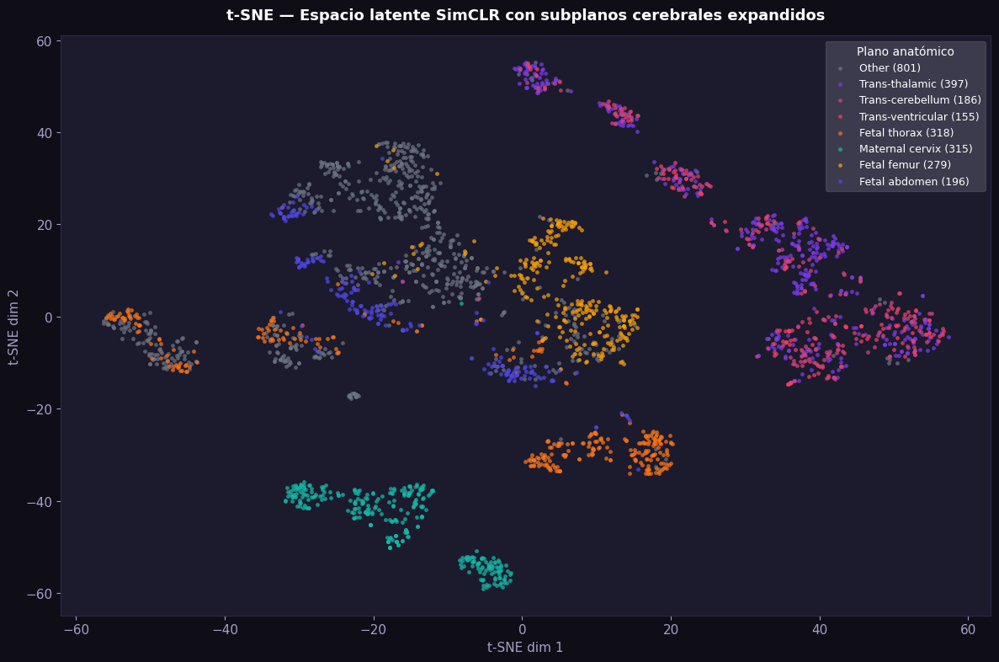
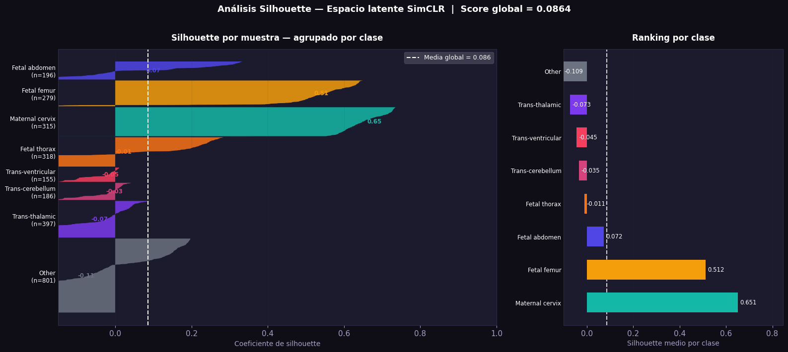
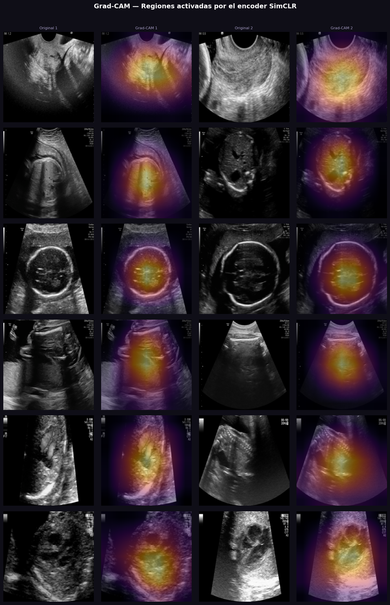
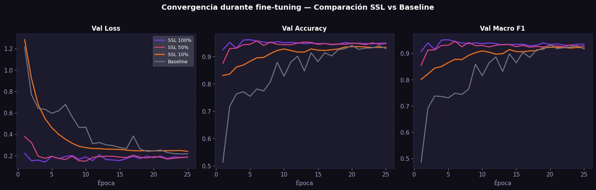
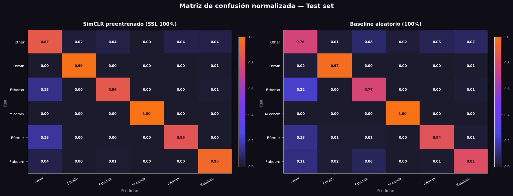
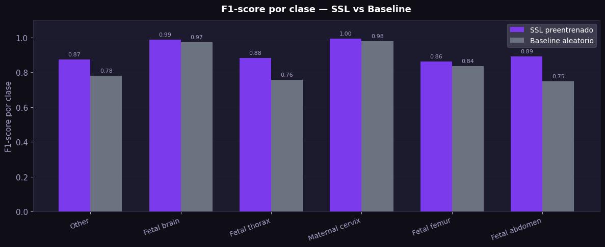

Hallazgo central: 89,5% de accuracy con sólo el 10% de las etiquetas.
La concentración del 88,5% del corpus en dos equipos (Voluson E6 + Aloka) introduce un sesgo multidominio: cada dispositivo produce dimensiones nativas y características de ruido distintas, lo que condiciona la capacidad del modelo de generalizar a nuevos equipos.
| Equipo \\ Plano | F. abdomen | F. brain | F. femur | F. thorax | M. cervix | Other |
|---|
Maternal cervix muestra una distribución más concentrada en valores bajos (mucho fondo negro), mientras Fetal femur presenta regiones más brillantes asociadas al hueso ecogénico.
Redimensionada y normalizada con μ=0,168 y σ=0,186 (estadísticas empíricas del propio dataset).
RGB · 3 canales
RandomResizedCrop (0,2–1,0), HFlip, ColorJitter ±0,4, Grayscale, GaussianBlur, RandomErasing.
2 vistas · NT-Xent τ=0,5
Pretrained ImageNet, capa fc removida. Embedding h ∈ ℝ⁵¹² usado para t-SNE y fine-tuning.
h: 512-d
BN + ReLU. Espacio z ∈ ℝ¹²⁸ donde se aplica la pérdida contrastiva NT-Xent.
z: 128-d
Linear(512→256) + BN + ReLU + Dropout(0,3) + Linear(256→6). CE ponderada por clase.
lr 1e-4 · 25 épocas

SimCLR descubre — sin haber visto etiqueta alguna — clusters anatómicos coherentes: Maternal cervix y Fetal femur emergen como las clases mejor separadas. Fetal thorax y F. abdomen presentan solapamiento parcial congruente con su similitud visual (cortes axiales del tronco).

El score es bajo en términos absolutos pero el modelo nunca recibió señal supervisada. M. cervix (0,651) y F. femur (0,512) dominan; Trans-thalamic y Other arrastran el promedio.

| Encoder | ResNet-18 (ImageNet) |
| Projection head | MLP 512→512→128 |
| Pérdida SSL | NT-Xent · τ = 0,5 |
| Optimizador | Adam + cosine |
| LR inicial → mín | 3e-4 → 1e-6 |
| Épocas SSL | 30 |
| Cabeza FT | Lin · BN · ReLU · Drop 0,3 |
| Pesos por clase (CE) | [0,47 – 3,32] |
| Épocas FT | 25 · lr 1e-4 |

Los tres modelos SSL convergen rápidamente — desde la época 1 superan 0,80 de val accuracy — mientras que el baseline aleatorio parte cerca de 0,55. SSL-100% y SSL-50% se solapan casi por completo desde la época 5: la mitad de las etiquetas son suficientes cuando se parte de una buena representación.
Pérdida residual NT-Xent de 3,76 al final del entrenamiento (decreció desde 4,42). El régimen recomendado por los autores es de 100–200 épocas vs. las 30 ejecutadas en este prototipo.
| Experimento | Imgs train | Accuracy | Bal. Acc. | Macro F1 | Δ vs Base |
|---|---|---|---|---|---|
| SSL 100% Encoder SimCLR · 100% etiquetas |
2.832 | 0,9229 | 0,9195 | 0,9159 | +0,0704 |
| SSL 50% Encoder SimCLR · 50% etiquetas |
1.416 | 0,9154 | 0,9145 | 0,9063 | +0,0608 |
| SSL 10% Encoder SimCLR · 10% etiquetas |
283 | 0,8954 | 0,9091 | 0,8859 | +0,0404 |
| Baseline aleatorio ResNet-18 init random · 100% |
2.832 | 0,8610 | 0,8559 | 0,8455 | — |
SSL-10% (sólo 283 imágenes etiquetadas) alcanza 89,5% de accuracy superando al baseline supervisado entrenado con 2.832 imágenes etiquetadas. Es el argumento más sólido a favor de adoptar SSL en flujos clínicos donde el etiquetado experto es escaso.


| Clase | Prec. | Rec. | F1 | n |
|---|---|---|---|---|
| Maternal cervix | 0,99 | 1,00 | 1,00 | 315 |
| Fetal brain | 0,98 | 0,99 | 0,99 | 771 |
| Fetal abdomen | 0,84 | 0,95 | 0,89 | 196 |
| Fetal thorax | 0,90 | 0,86 | 0,88 | 318 |
| Other | 0,88 | 0,87 | 0,87 | 768 |
| Fetal femur | 0,88 | 0,85 | 0,86 | 279 |
SSL 100% supera al baseline aleatorio en magnitud significativa para un dominio clínico.
SSL-10% (283 imgs) supera al baseline supervisado entrenado con 2.832 imgs etiquetadas.
t-SNE muestra agrupamiento coherente; M. cervix y F. femur emergen como las clases mejor separadas en el espacio latente.
El preentrenamiento contrastivo no separa Trans-thalamic, Trans-cerebellum y Trans-ventricular en el espacio latente.
Grad-CAM evidencia activación en estructuras centrales (cara fetal, contorno torácico, hueso femoral), no en artefactos del equipo.